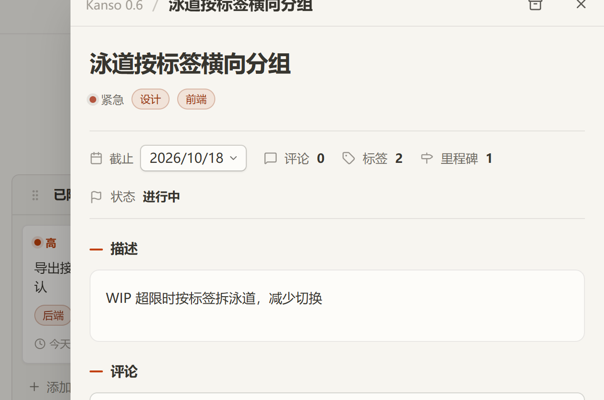
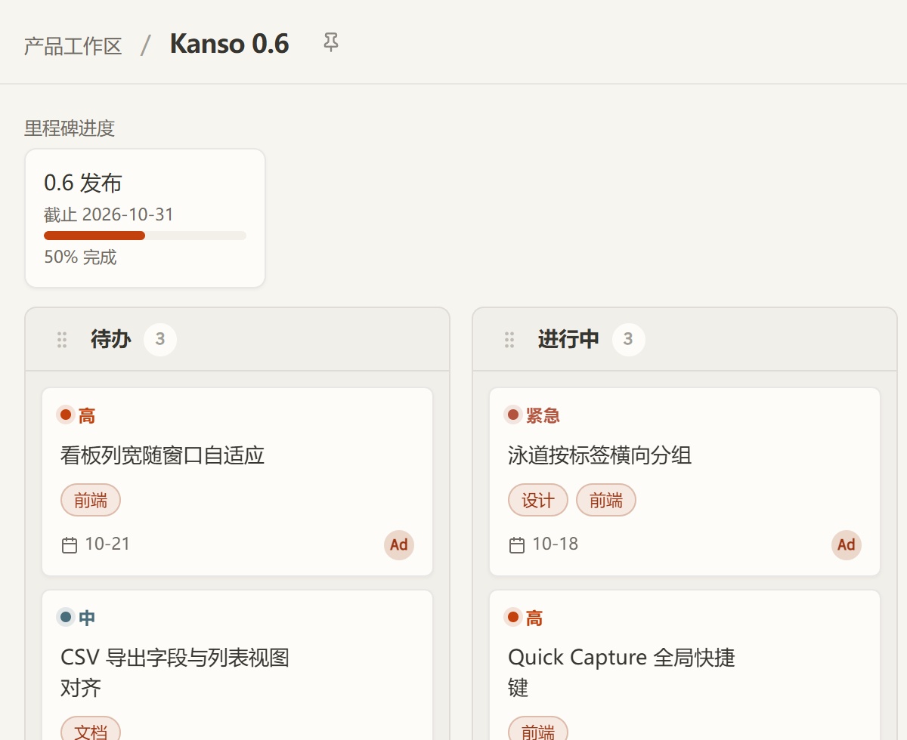

任务详情不丢上下文
描述、评论、活动记录、标签与里程碑都收在同一个抽屉里，点开就能接着往下做。

从捕捉念头到收尾，每一步都落在同一处，不用在多个工具之间搬运状态。

描述、评论、活动记录、标签与里程碑都收在同一个抽屉里，点开就能接着往下做。
列视图看推进到哪一步，泳道视图按标签把同一批任务横向摊开。
WebSocket 推送，两个窗口之间的移动与编辑立刻对齐，不用手动刷新。
一个容器，一个数据目录，一个自己定的访问密钥。
git clone https://github.com/zephyr-qu/kanso.git
cd kanso
KANSO_ACCESS_KEY=$(openssl rand -hex 32) docker compose up -d不常打开的入口保持安静，要用的时候一步到位。